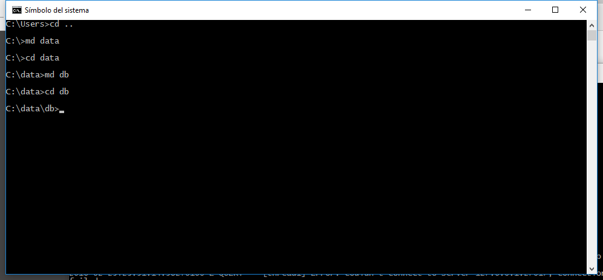
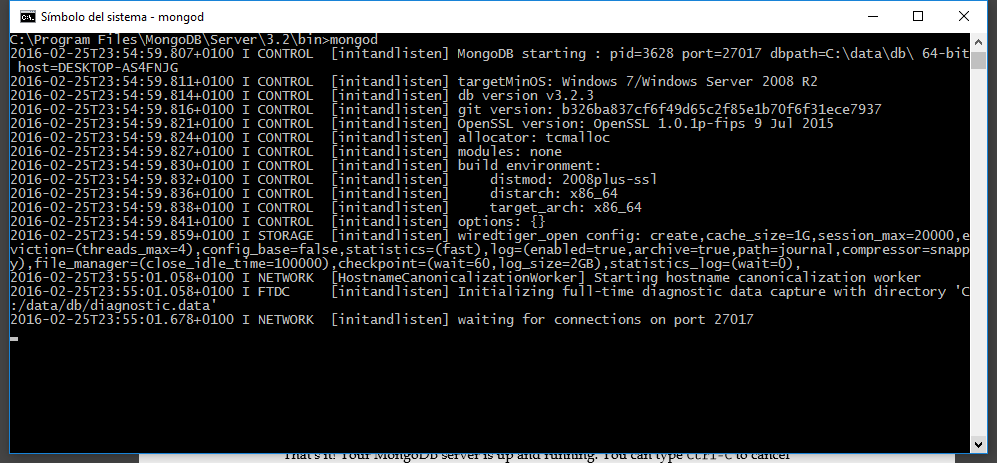
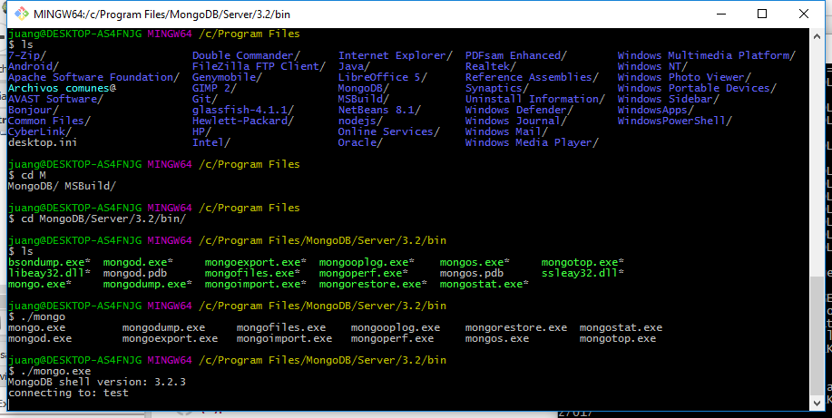

Instalación
Suponemos que partimos de una máquina Linux 64 bits (por defecto Mongo en 32 bits no tiene activado el journaling para recuperarse de errores inesperados).
Podemos descargar el servidor de su Web o bien instalarlo desde el gestor de paquetes de nuestra distribución.
Instalación en Linux
Nosotros tenemos un equipo basado en Ubuntu, así que usamos el comando:
$ sudo apt-get install mongodb mongodb-clients mongodb-server
Instalación en Windows
Descargamos el fichero MSI de su Web, hacemos doble clic e instalamos. Si no sabemos qué versión de Windows estamos usando, puedes comprbarlo con:
wmic os get caption
wmic os get osarchitecture
Durante el proceso de instalación es posible que el firewall de Windows detecte una conexión a Internet que deberemos permitir.
Si optamos por la instalación de sólo servidor, no habrá ninguna base de datos creada, tendremos que crear el directorio C:\data\db\ en nuestro disco duro:

A continuación podemos lanzar el servidor por primera vez invocando el comando mongod desde la carpeta de instalación (cuidado que no está en nuestra PATH):

Para parar el servidor, en esta misma terminal podemos pulsar CTRL+C.
Si queremos instalar el servicio de Windows, tendremos que teclear: C:\Program Files\MongoDB\Server\3.2\bin>mongod.exe --install
Conectando al servidor con la Mongo Shell
En el directorio bin de nuestra instalación de MongoDB tenemos el programa mongo.exe

Obra publicada con Licencia Creative Commons Reconocimiento No comercial Sin obra derivada 4.0